A helpful guide by David A. Wheeler.
This document briefly lists some of the more well-known chess openings, so that when you see the first few moves you can at least say "Ah! That's the X!", where X is some well-known opening. Many books and encyclopedias give "how to play" information on each opening; here, we'll concentrate on at least knowing some common approaches to starting chess. This is a subset of well-known openings; many others are not covered here. Before you play a particular opening, you'd be wise to study it in more depth than given here. Pictures show the opening position; selecting the picture will show the opening moves animated one move at a time if you have a PGN viewer installed.
In all openings there is a struggle for key territory, in particular the center squares, and an effort to deploy pieces and pawns in useful positions. Some are direct, while others are more subtle and indirect approaches toward these goals.
There are three groups of openings covered here:
Each of these openings is briefly described below.
The Ruy Lopez (also called the "Spanish" opening) starts out as
1. e4 e5 2. Nf3 Nc6 3. Bb5 The Ruy Lopez is an old opening, but it's a favorite of Gary Kasparov and Bobby Fischer. In it, White creates a potential pin of the d-pawn or Knight and starts an attack immediately, while simultaneously preparing to castle. White generally directs pressure on Black's e-pawn and tries to prepare for a pawn on d4. It's known that Black's best reply on move 3 is a6, which attacks White's attacking bishop. After that, White can back up (Ba4) or exchange pieces (Bxc6).
| 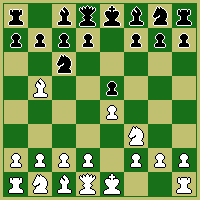 |
This "Quiet Game" has White performing a mild attack with his Bishop,
but Black is often able to even up the game with his defenses.
It starts as:
1. e4 e5 2. Nf3 Nc6 3. Bc4 Bc5If White then replies "d3", you have the "Guioco Pianissimo" ("The Quietest Game") - a very passive game.
| 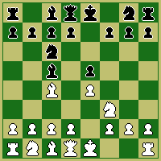 |
| If White replies with "b4?!", you have the "Evans Gambit", in which White offers a pawn in exchange for a powerful center and possibly opening his Queen Bishop. | 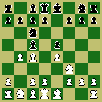 |
This opening was the most popular opening in the 1800s.
White offers a pawn in exchange for rapid development.
It's rarely seen now at the master level; according to Keene
it's been found that Black can obtain a
reasonable position (giving nothing for White's pawn).
1. e4 e5 2. f4A natural following move is "exf4" accepting the gambit. | 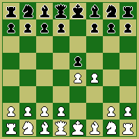 |
The Sicilian starts as:
1. e4 c5The Sicilian is popular at the master level. Black immediately fights for the center, but by attacking from the c-file (instead of mirroring White's move) he creates an asymmetrical position that leads to lots of complicated positions. Black tries to attack White's e-pawn, often through a Knight at f6 and Bishop at b7. Black would like to make the move "d5" without retribution.
| 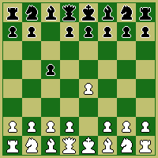 |
The Sicilian has been extensively studied, and there are many variations.
A popular variation is the "Dragon" variation, which starts as:
1. e4 c5 2. Nf3 d6 3. d4 cxd4 4. Nxd4 Nf6 5. Nc3 g6 In this variation, Black finachettos a bishop on the h8-a1 diagonal. This is called the "Dragon" variation because Black's pawn structure is supposed to look like a dragon. | 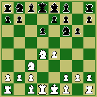 |
Another variation that's quite popular is the "Najdorf"
variation. It starts just like the Dragon, and
diverges on Black's move 5:
1. e4 c5 2. Nf3 d6 3. d4 cxd4 4. Nxd4 Nf6 5. Nc3 a6 According to Grandmaster Daniel King White often responds with "Be2", permitting Black to attack the center with "e5!". | 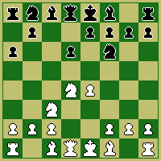 |
|
In the French Defense, Black lets White have more control over the
center, in exchange for which he builds a (hopefully) safe wall of pawns.
The French Defense starts as:
1. e4 e6 2. d4 d5 Games generally involve jockeying for position. The center usually becomes closed, two competing pawn chains arise, and each player tries to outflank the other. White generally tries to play e5; Black tries to play c5 or f6. Black's queen Bishop often becomes trapped and useless, and it's known as the "French Bishop".
| 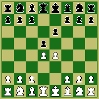 |
|
The Caro-Kann is like the French defense - Black lets White build control
of the center, and Black tries to get a pawn at d5.
It looks like a "wimpy Sicilian".
The Caro-Kann starts out as:
1. e4 c6 2. d4 d5 The main line of the Caro-Kann is 1. e4 c6 2. d4 d5 3. Nc3 dxe4 Black gets to eliminate one of White's central pawns and can get his pieces developed, which is an advantage over the French Defense. However, Black's pieces end up with more of a passive defensive role, so players of this opening are often looking for White to make a mistake (however slight). | 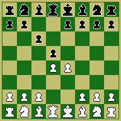 |
|
The Center Counter starts out as:
1. e4 d5This opening is also called the "Scandinavian" opening. A common continuation is exd5 Qxd5. | 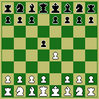 |
This opening goes by various names, such as "Pirc" and "Modern". It starts:
1. e4 d6or 1. e4 g6Keene labels the "Modern Defense" as the sequence: 1. e4 g6 2. d4 Bg7This is a relatively new opening. In the 1930s this was considered inferior, but by the 1960s it was found to be quite playable. Black lets White take the center with the view to undermining and ruining White's "wonderful" position. This opening is tricky to play and correct play of it is counter-intuitive (immediate center control is not a goal, since Black is trying to undermine that control). | 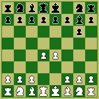 |
Now we look at openings other than "1. e4".
The Queen's Gambit starts with:
1. d4 d5 2. c4White offers up a pawn in exchange for rapid development. Black can accept the gambit with dxc4, playing "Queen's Gambit Accepted", which is a risky way to play this gambit. Black can also play Nc6 (the Tchigoran Defense), e6 (which leads to the Tarrasch Defense), or play e6 (the Orthodox Defense). | 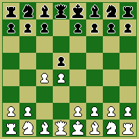 |
This is a "hypermodern" opening, where Black lets White take the center
with the view to later ruining White's "wonderful" position.
It's a risky opening, a favorite of both Kasparov and Fischer.
1. d4 Nf6 2. c4 g6 3. Nc3 Bg7Black will be interested in playing c5, and when White plays d5, reply with e6 and b5. | 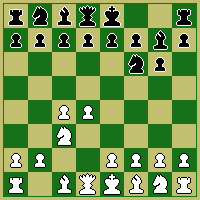 |
All of these "Indian" defenses start with:
1. d4 Nf6 2. c4 e6The Nimzo-Indian continues with "Nc3 Bb4". In the Nimzo-Indian, White tries to create a pawn center and mass his pieces behind behind them for attack. | 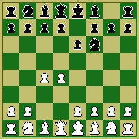 |
The Dutch defense starts as:
1. d4 f5The Dutch defense is an aggressive counterplay by Black. Black immediately begins to move toward White's kingside in an attempt to crush White. However, it also creates weaknesses in Black's position from the beginning - this move of the f-pawn weakens Black's defenses and doesn't help develop pieces. | 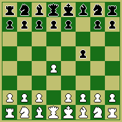 |
The English opening is a "flank" manuever. It starts very differently:
1. c4Here White hopes to control the center by first gaining support on the side. A common response for Black is "c5". | 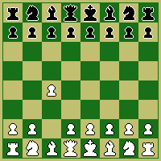 |
(C) 1997 David A. Wheeler. All rights reserved except as follows:
You may freely view this document on-line
when you acquire it directly from its original location.
You may also make a printout of it so long as you own at most one printed
copy of this document.
You may not further copy nor sell this work.
You may not further distribute this document (e.g. on another web site,
disk, or CD-ROM) without written agreement by the copyright holder.
Temporary copies created to perform finding or viewing the
document (e.g. caches and web search systems) are fine as long as they
don't provide the entire document in its original form to viewers.